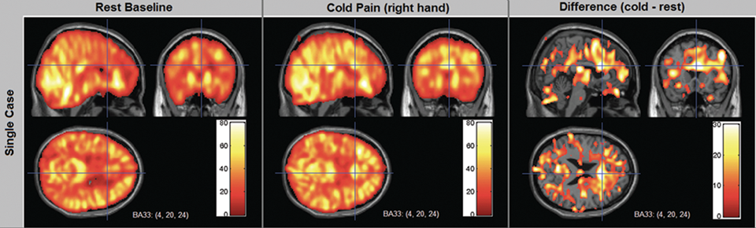

In the rest of this module, you will learn about the approaches described above. If you are interested in some extra
historical background about the idea of brain regions, click the box below.
You have probably seen pictures before of a head divided into different brain regions responsible for different ideas, like the picture below:
You might have also seen funny versions of these pictures, like the one below:
These kinds of pictures were common in the study of phrenology several centuries ago. Phrenology was the idea that different parts
of the brain were responsibile for different parts of your personality, and that if a certain part of your personality was stronger it would
increase the size of that part of your brain, causing that part of your head to get bigger. Phrenologists would try to read people's
personality by feeling their head, in order to see what part of a person's head is unusually big or small, to conclude that this person has a
large "lust" area, a large "honesty" area, or whatever. Nowadays we know that this was pseudoscience: i.e., it was a totally
wrong idea, with no evidence or proof, just like palm reading or horoscopes or similar pseudosciences today. You can't learn about someone's thoughts
or personality by feeling their head, just as you can't learn someone's personality by knowing their 星座 and you can't learn someone's
future by feeling their palm. It's totally junk, and nowadays we consider phrenology to be kind of a silly old idea.
But phrenologists actually had one thing right, which was a new and groundbreaking idea: the idea that different brain regions do different things.
Before that time, scientists thought the brain was just a homogeneous blob: they thought each part of the brain was the same as the rest of the brain,
and that the whole brain worked together to think, and that there were not different sub-parts of the brain. This view was called holism:
the idea that the brain is a holistic unit. You can imagine it's like a big piece of 凉粉: it's all the same, and no matter where you bite
it it will taste the same.
The idea of the phrenologists was new and totally different from holism. This idea, called localization, was that different parts (different locations) of the brain
do different things; the brain is not one homogeneous blob, but it's made up of many different parts. You can imagine it's like a big bowl of
杨枝甘露: it has different pieces and different textures inside it, and depending on where you put your spoon in, you might
taste some mango or some pomelo or some sago balls...
The phrenologists' idea that you can learn someone's personality by feeling their head was wrong, and has been debunked. But their idea that the brain has
different parts which do different things was a new insight that revolutionized how we think about the brain, and this idea still has a major influence
on how we understand the brain today (although nowadays not everyone will agree with the extreme version of this idea—nowadays some people think
the brain is all made up of interacting networks, rather than discrete locations).
One famous case that provided evidence for this idea of localization was an American worker named Phineas Gage. Gage worked on building new
railroad tracks, and in 1848 experienced an accident at the construction site. During the accident, a large metal rod (about 1 meter long and 2 cm
thick) went through his head, flew through the air, and landed in the ground 20 meters away (covered with his blood and brain matter). The picture
below shows Gage holding the rod that went through his head, as well as a drawing of where the rod went through his head.
Amazingly, Gage survived the injury and was mostly unharmed; according to people who witnessed the accident, it sounds like he pretty much just got up,
took the day off, went home, and told his family "Wow, I had a crazy day at work today." Medically, he had almost no ill effects from the
accident. Over the next several weeks, though, people who knew him said that his personality had changed.
Nowadays, it is not clear how much of the stories about his personality change are really true; there was a lot of rumors and misinformation back then.
But what historians mostly do agree on is that he had trouble with organization, things like getting to work on time, remembering appointments, or
remembering directions. The important thing is that that he survived the injury and that some aspects of his cognition (like language) were unaffected but other aspects
(like remembering appointments) were impaired. This provided evidence that different parts of the brain have different functions: that's why an injury to
one part of his brain influenced some of his cognitive functions (like memory) but not others (like language).
An interesting post-script to the story of Phineas Gage is that later in life he took a job as a driver, and it seems that this work helped him restore
a lot of his cognitive function; after many years of that kind of work, his memory and stuff like that seems to have been just as good as it was
before his injury. This demonstrates another important thing about the brain: it can rearrange itself (if the brain area responsible for a certain
kind of thinking gets damaged, other brain areas can eventually take over that responsibility). For more about the life of Phineas Gage, read
this recent article from Slate.
Sometimes a person gets some brain damage (usually because of an injury like getting hit in the head, or because they have a stroke—which
often happens to older people), and after their brain is damaged they experience problems with using language. The condition of having language problems
resulting from brain damage is called aphasia. The first way people were ever able to study how language works in the brain, without having
modern technology available, was to study people who have aphasia. Essentially, doctors could describe what language difficulties a patient has, and then
after the patient dies they could open the patient's head to view their brain and see where the brain damage was. (Nowadays we don't need to wait for a
patient to die; we can use technology like structural magnetic resonance imaging, also called "structural MRI" or "sMRI", to
get a picture of a person's brain inside their head.) Then they could correlate the location of the brain injury with the type of the language difficulty.
For example, if a lot of patients who have trouble understanding verbs also have damage in the same part of the brain, then maybe we could infer that that
part of the brain is responsible for understanding verbs. If a lot of patients who have trouble understanding nouns also have damage in another part of the
brain (different from the "verb area"), we might infer that that is the part of the brain responsible for understanding nouns.
To get an idea how this process works, watch the two videos linked below (you have to click the links to open the videos) and see if you can notice similarities or differences in their language use.
I recommend you watch the videos and write down what you notice about their language use before you read ahead.
From watching the above videos, you have probably noticed that the two patients have quite different symptoms. The first patient seems to have
trouble speaking, and needs a lot of time to plan what to say; on the other hand, he seems to correctly understand what the other person is asking him,
and the stuff he says is pretty much understandable (it doesn't have much "grammar", but you can probably understand what he means). The second
patient has the opposite pattern. He can speak quickly and effortlessly, with correct grammar, but a lot of what he says doesn't make much sense (some of it
is not even real English words). He also sometimes does not seem to correctly understand what the other person is asking him.
The first person has a condition called Broca's aphasia (named after Paul Broca, the first doctor to systematically describe this
medical condition). The second has a condition called Wernicke's aphasia (named after Carl Wernicke, the first doctor to systematically describe
this one). At the time these were discovered, those two doctors suggested that they were associated with brain damage in different brain areas (腦區).
Specifically, people with Broca's aphasia tended to have damage in a region near the left front side of the brain (now known as Broca's area),
and people with Wernicke's aphasia tended to have damage in a region further back (now known as Wernicke's area); see the picture below.
For extra detail about what exactly the differences between Broca's and Wernicke's aphasia might be, click the box below.
The story about Broca's and Wernicke's aphasia is not as simple as what I described above. Originally, people believed Broca's area was responsible for speaking (language production)
and Wernicke's area responsible for understanding (language comprehension)—hence the first patient having trouble with speech and the
second patient having trouble with understanding the questions. This idea was later revised to a theory that Broca's area is responsible for grammar and
Wernicke's area responsible for meaning—note that the first patient speaks in meaningful but ungrammatical utterances, whereas the second patient often
uses grammatical but meaningless sentences. But some more detailed experiments have shown that this is not the case.
A common way to test language comprehension for people with aphasia is a picture-sentence matching task. People see several pictures, then hear
(or read) a sentence, and then have to choose the picture that best matches the sentence. Imagine they get the below pair of pictures:
Now imagine the person with aphasia hears the sentence, "The woman dried the girl." The person should choose the
picture on the right side. People diagnosed with Broca's aphasia generally can do this well, which suggests they don't have a difficulty with
language comprehension.
But now imagine the person hears the sentence, "The woman was dried by the girl." The person should pick the picture
on the left side this time. But in fact, people diagnosed with Broca's aphasia normally still pick the picture on the right, which does not actually
match the sentence! This suggests that they actually do have difficulty understanding certain kinds of sentences.
How can we explain this pattern? Why do people diagnosed with Broca's aphasia have good understanding of the first kind of sentence, but incorrect
understanding of the second kind of sentence?
To answer this question, we have to think about different kinds of words. Linguists often divide the words in a language into two types: content
words (also called open-class words) and function words (also called closed-class words). Content words are the words
that carry most of the meaning in the sentence, they often refer to concrete things or actions, or to abstract but meaningful ideas. These are words
like "cat", "jump", "independence", etc. Function words are mostly responsible for grammar, e.g., indicating
relationships between other words in the sentence, giving hints about the sentence structure, etc. These are words like "the", "of",
"in", etc.
How do the two sentences from the experiment look, if we think about them in terms of content words and function words? Let's write out the sentences
again, and underline all the content words:
Correctly understood sentence: The womandried the girl.
Misunderstood sentence: The woman was dried by the girl.
Notice that, if you ignore the function words and just see the content words, both sentences look the same: "woman dried girl". This might
explain why people diagnosed with Broca's aphasia have trouble. One theory is that they are unable to interpret the function words. Thus, since
they don't notice the function words, they don't notice that the second sentence is supposed to be a passive sentence. They interpret both sentences
as "woman dry girl", and interpret them using a default subject-verb-object strategy. For the first sentence, this strategy happens to
luckily give them the right answer: the woman really is the one who is drying the girl. But in the second sentence, this strategy gives them the
wrong answer.
For much more detail on Broca's aphasia and experiments studying it, see Grodzinsky (2000)
and Grodzinsky & Santi (2008). The earlier
paper describes an extremely detailed theory of Broca's aphasia and Broca's area; the theory is wrong (and the commentaries included in that paper
explain why), but the paper is still a great summary of the literature and an excellent example of how to construct a scientific argument.
That is the general logic behind aphasiology studies. The logic is called double dissociation. Imagine there are two different kinds
of language difficulties we want to focus on (I'll just call them Difficulty 1 and Difficulty 2, but these could refer to, for example, difficulty with grammar and difficulty
with meaning). Furthermore, imagine that there are two different brain areas we want to focus on (I'll just call them Area A and Area B, but these could
refer to, for example, Broca's area and Wernicke's area). If people with Language Difficulty 1 have damage in Brain Area A but not Brain Area B, and people
with Language Difficulty 2 have damage in Brain Area B but not in Brain Area A, then this is taken as evidence that Brain Area A is responsible for Language
Difficulty 1 and Brain Area B is responsible for Language Difficulty 2. This kind of research has provided a lot of information about which brain areas may
be responsible for which aspects of language processing.
Unfortunately, the reality is more complicated than this ideal, and there are several key limitations to the aphasiology approach: brain damage
tends to be different across people, aphasiology depends on studying atypical language use, brain damage affects more than just language, and double dissociations rarely occur.
Problem 1: brain damage varies across people. In reality, when people get brain damage, it is rarely perfectly localized to
just one area (like Broca's area). Everyone's brain damage is different, and often the damage also extends to other nearby areas. This makes it really hard
to find "perfect" cases to compare (it's rare to find someone with brain damage covering just Broca's area, to compare to someone with brain damage
covering just Wernicke's area).
Problem 2: aphasia is atypical. People with aphasia are, by definition, not "normal" normal language users. This is
not necessarily a problem; people with aphasia are a part of the world, and it's important to understand how their language works. But if you want to
understand how "typical" language works, it might be better to study it in normal speakers who do not have brain damage.
Problem 3: brain damage affects more than just language. Brain damage doesn't only affect language; it can also affect other
processes, like attention, memory, muscle control, etc. This can make it difficult to study people with brain damage. Suppose a person has difficulty
speaking. Is this because their language is impaired? Or is it because the part of the brain that controls muscle movement in their mouth is impaired? Maybe
their language ability is totally fine, but they just have a hard time moving their tongue. Or suppose a person doesn't do well in a lexical decision
experiment on the computer. Is this because their world knowledge is impaired? Or is it just because they have a hard time controlling the movement of
their fingers? Before making claims about people's language abilities, it is often necessary to do many other tests to rule out these other kinds of issues
(i.e., to make sure that patients don't have other, non-language-related, impairments).
Problem 4: double dissociations rarely occur. This is probably the most serious problem. The example of double dissociation
that I described above is an idealized example, but in real life the data are much messier. There have been many documented cases of people who show
all the symptoms of Broca's aphasia (i.e., their language has the characteristics you saw in the patient with Broca's aphasia above) but who do not have any
damage in Broca's area. Likewise, there are many documented cases of people who have damage in Broca's area but do not show any of the symptoms of Broca's
aphasia (i.e., their language use is fine, or their language difficulties are different than the ones we saw in the patient with Broca's aphasia). Therefore,
there is generally not an obvious connection between where brain damage happens and what language symptoms occur. Nowadays, some aphasia researchers don't
even talk about different types of aphasia (like "Broca's aphasia" and "Wernicke's aphasia") anymore, but they just talk about
"aphasia" in general.
Stimulation is a method closely related to aphasiology. One of the problems we saw with aphasiology above is that it's hard to control;
people don't generally have brain damage in exactly the place you want to study. Stimulation is a way of solving that problem. In stimulation, the
researcher uses a special kind of equipment to shoot an electric or magnetic signal into some region of the brain and temporarily interfere with it—basically,
turning off part of the brain for a moment. This way the researcher can "create" fake brain damage, under controlled circumstances, to see how
a person with brain damage in that area might use language. For an example of what it looks like, see this video: Electro-Medicine : Transcranial Magnetic Stimulation (TMS).
There are two main types of stimulation that are used: transcranial magnetic stimulation (TMS) and transcranial direct current
stimulation (tDCS). The first one uses magnetic signal, the second uses electric signal. There are a lot more details to it (for example, tDCS can
hit people with positively charged [cathodal] electric current or with negatively charged [anodal] electric current, depending on the direction the
electric current is moving... and it seems like these may have different effects on certain brain regions) but I don't know much about it. You may also
see these discussed online in other contexts (e.g., some people believe TMS can also be used to treat depression, or to improve language learning) but
I know nothing about that so I can't tell you much about it.
For some more interesting issues about stimulation methods, click the box below.
One potential problem you may have noticed in the video is that the TMS machine makes a lot of loud clicking. When the man's speaking was interrupted,
was it really because the magnetic current to the particular brain region interfered with his speech? Or did the clicking sound just trick him into
reacting that way? This problem is similar to the well-known placebo effect (安慰劑效應). In the placebo effect,
sometimes people who are given fake medicine instead of real medicine still get healthier just as if they have been given real medicine; this is
evidence that, for some situations, just thinking you got medicine is enough to make you better. The placebo effect is known to occur
in lots of experiment contexts, not just in medicine: if people think they are getting some special treatment, they subconsciously react differently.
This might also happen with TMS stimulation with loud clicking. To control for this in medical studies, researchers usually give half of the participants
real medicine and give half of the participants "placebo" (fake medicine); they can only conclude that the real medicine works well if it
improves people's health more than the placebo does. Likewise, for stimulation studies, people usually sometimes stimulate the brain area, and
sometimes they do "sham" stimulation: they let the machine make noise, but not actually shoot any stimulation signal into the brain. That
way they can see if people's language is messed up by the real stimulation more than it is by the sham.
Another issue is what brain area gets hit with the stimulation signal. If you affect one brain region with the signal and the person's language ability
gets temporarily disrupted, that doesn't necessarily mean that that brain region is in charge of language. Maybe the real story is just that hitting
any brain region shuts down the entire brain for a moment. (You can notice in the video that it seems like the man didn't just
have his language disrupted; his whole ability to control facial muscles was also hindered when the stimulation happened.) To rule out this story,
experimenters usually have to do stimulation on other brain areas as well. For example, they will apply stimulation and sham stimulation to a
brain region they think is a language region, and then also apply stimulation and sham stimulation to a brain region they think is not a language
region. They can only conclude that the first region is a language region if stimulation (but not sham stimulation) in that region interferes with
language, while the same stimulation (and sham stimulation) in the other brain region does not interfere with language.
There are a lot more nuances about how stimulation works, and I am not an expert in this topic. For more information, you can look up the research
of Dr. Mehdi Bakhtiar, another CBS professor, who specializes in brain stimulation.
The above methods (aphasiology and stimulation) all are based on seeing what the brain does when it is not working normally: when someone
experiences a brain injury or when stimulation is used to temporarily shut down part of the brain. An alternative approach is to watch how the brain
reacts when people use language normally. Hemodynamic and electrophysiological methods are ways of doing that. Hemodynamics examines where brain
activity occurs, and electrophysiology examines when it occurs.
An easy way to remember what hemodynamic methods are is to break down the word itself. The word hemodynamic is made up of two
Greek roots, hemo (meaning blood) and dynamic meaning movement). Hemodynamics is a way to see what part of the brain is active, by seeing
where blood is moving in the brain. Long story short, when some part of the brain is working hard (to do thinking, understand language, or whatever), it
needs oxygen to keep working. Blood is the way your body delivers oxygen to parts of the body that need it. So if a lot of blood is moving to some part of
your brain, we can infer that that part of your brain is working extra hard. Thus, the hemodynamic way of seeing brain activity is based on watching
the movement of the blood. For some interesting history about where this idea originates from, click the box below.
The idea that blood shows us something about brain activity comes from the Italian doctor Angelo Mosso, who was working in the late 1800s. He noticed
something interesting about one of his patients, a farmer named Bertino. Several years before, Bertino had an accident where he was hit in the head,
and part of his skull broke off, leaving a hole in his skull. Eventually the skin grew back over it, but that left a "soft" spot in the front of
his head. Now, this was a small village in Italy in the late 1800s, where everyone was Catholic, and everyone prayed several times per day. Like many
Italian villages, there was a big church with a bell tower, and several times every day the bell rang to remind all the villagers that it's time
to pray. One day Mosso was with Bertino and noticed that just when the bell started ringing, the soft spot on Bertino's head started to
pulsate (slowly shaking or vibrating, like 心跳). After doing some more tests, he noticed that this pulsating didn't happen only when
the bell rang; it happened any time he asked Bertino to pray (whether praying out loud or praying silently). He guessed that the pulsating happened
because extra blood was coming to Bertino's brain when he had to use his memory, such as to remember the words for the prayer he was going to say.
Mosso did some more interesting experiments to confirm this idea. He built a machine called the human circulation balance (see picture below,
from this article). This machine is a little bit like a see-saw
(a toy you probably played on in the park where you were kids: a long beam balanced in the middle, with chairs on two sides, so you and your friend
can each sit on one side, and when one of you goes down the other goes up). He would have a volunteer lie down on the machine, and balance it perfectly
so the volunteer's head and feet are both evenly balanced. Then, he would ask the volunteer to solve some difficult math problems. When they started
solving difficult math problems, the volunteer would tilt: the volunteer's head would start to go down and their feet would start to go up! This happened
because doing a difficult math problem caused more blood to move to the volunteer's brain; that made the volunteer's head get heavier; and that made
the balance start to tip. This provided a cool demonstration, more than 100 years ago, that blood movement is related to brain activity.
Nowdays, we don't need to find volunteers with holes in their skull, and we don't need to balance people on a board; we have modern technology to
see how the blood moves inside someone's brain. But Mosso's experiments were a very clever way to learn about this topic even with the very low-tech
[compared to modern standards] equipment that was available in the 1800s.
There are several different kinds of equipment that can see where blood is moving in your brain, including functional magnetic resonance imaging
(fMRI), positron emission tomography (PET), and functional near infrared spectroscopy (fNIRS). They work in slightly different ways
(fMRI uses a huge magnet to sense where the blood cells in your brain are; PET involves injecting the volunteer with a chemical that flows with their blood
and can be detected by the machine; and fNRIS involves shining light through the brain) and are all harmless; the detailed differences between them aren't
important for our purposes, because they all do basically the same thing, which is monitoring where the blood is in your brain. If a certain brain area
has a lot of blood going there when you perform some task (like understanding a sentence), we might infer that that brain area is especially "active" during
that task.
But, like all the other methods, things are more complicated than that. We can't just scan your brain and see what part is active, because in
reality all of your brain is always active. Every part of your brain is always working on something. So, typically we have to see if some part of your
brain is more active during one task than during some control task. This is the same logic we have applied in other experiments, like for examining
the garden path effect and filled gap effect: recall that we can't just look at how long people take to read one word (like "Greg"), but we have to
see if they take more time to read that word in a gap sentence than it takes to read the same word in a non-gap sentence.
The same logic applies to hemodynamic data. Imagine you want to find which brain area is responsible for syntax. You could just have people
read sentences that have syntax in them, and see what part of the brain is active. But you will find that the entire brain is active, like in the middle picture
below. Some of the brain activity might be related to understanding syntax, but other parts of the brain activity might be related to other things, like
recognizing the meanings of the individual words, recognizing the letters, basic vision, thinking about what to have for lunch, etc. So
typically you need to also record the person's brain activity for some task that is very similar to sentence reading, but does not involve syntax (for example,
reading a random list of words with no syntactic structure). That might show brain activity like the left picture below. Finally, you can subtract
the brain activity from the control task (reading words with no syntactic structure) from the brain activity from the syntactic task. Hopefully, brain
activity that happens in both tasks (like basic vision and recognizing letters) will disappear in this subtraction (i.e., if the 'letter reading' brain
area has an activity level of '5' in the control task and an activity level of '5' in the syntactic task, 5 minus 5 will become zero). On the other hand
brain activity that happens in only the syntactic task, but not the control task, will remain, as shown in the rightmost picture below. This is called the
subtraction method. (Note that these pictures are just for an example, they're not actually data about syntax.)

Based on this knowledge we can also dispel a common myth. You have probably often seen people saying "Humans only use 10% of their
brain"; people might even suggest that by reading their book, watching their TED talk, or buying their product, you can "unlock" the rest
of your brain and become smarter. This is nonsense. People get the idea that we only use 10% of our brain by seeing pictures like the brain scan shown below.
Based on these images, which only show small blobs of activity, people misunderstand that the rest of the brain is not active. But these are
subtraction images. They show that only a small part of the brain has more activity for one task (e.g., sentence reading) compared to a
control task (e.g., reading word lists). They do not show that the rest of the brain is inactive; just that the rest of the brain is equally active
for both tasks. So if you ever hear someone claiming that we only use 10% of our brain, you can know that they don't understand anything about the brain.
To read about an example of how this kind of research looks in practice, click the box below.
Kim and colleagues (1997) used fMRI to try to see if people activate different
brain areas when speaking their native language or their second language. They scanned people's brains while people spoke in their first language
or their second language. To get people to speak, they showed the person a picture of morning or night time, and when the person saw the picture they
had to describe what they did at that time. For example, if the volunteer saw a picture of the morning, they had to describe (in either their first
language or second language) what they did that morning. For each participant, the researchers did three scans: a scan of brain activity
when people speak their first language, a scan when they speak their second language, and a scan when they just lie down doing nothing ("rest"). (What
do you think was the purpose of the last scan? Try to guess the answer before you read ahead... The purpose of this was to have a scan to use for
the subtraction method!) Finally, they subtracted the resting scan from the L1 scan to see what brain areas were active when speaking the first language,
and they subtracted the resting scan from the L2 scan to see what brain areas were active when speaking the second language. The picture below shows
the results from one volunteer, who speaks English as a native language and French as a second language. The important thing to see is that speaking L1 and
L2 activated nearby, but slightly different, brain areas.
There is a lot more detail to this: these are the results around Broca's area, whereas the brain activity pattern near Wernicke's area was
different; the authors also tested people who were early bilinguals (speaking two languages, both at native proficiency) and those speakers had different
results than these; a later study (Perani et al., 1998) found that the results are different if you test higher-proficiency L2 speakers; and in these studies the participants didn't
actually speak their language, but rather they silently imagined speaking their language. For more details, see the paper.
This paper was a famous demonstration that using your L1 and your L2 might rely on different brain areas. But are there any limitations to
this study? One important thing to think about is the subtraction. Recall that the authors located the L1 brain activity and L2 brain activity by subtracting
the brain scan during rest time from the brain scan during speech. The logic is that the activity remaining after this subtraction might be due to any
cognitive process that occurs during the speech task but not during the rest task. So can we really be sure that this brain activity is due to speaking your
L1 (or L2)? Or are there other, irrelevant differences between these tasks?
There certainly are. In the speaking task (but not the resting task) participants had to use their memory to remember what they did that morning
or the previous night. In the speaking task (but not the resting task) participants had to imagine what they did. In the speaking task (but not the resting
task) participants had to look at, and comprehend, pictures. In the speaking task (but not the resting task) participants had to follow the experimenter's
instructions and perform the task assigned to them. Therefore, the brain activity observed in the paper might be due to any of these things, rather than
to language use. This is a major shortcoming of the subtraction method: it is often difficult to create a 'control' task that is perfectly matched to
the important task in every way. Think also about the example discussed above, trying to find the "syntax" brain area by comparing brain activity
during grammatical sentence reading to brain activity during reading a random list of words. Sure, one difference between these tasks is that sentence
reading involves syntax and word list reading does not. But there are other differences as well. Reading a sentence allows you to picture a story or a thing
happening, whereas reading a word list does not. And a sentence probably involves lots of suffixes and function words, whereas a random word list might not.
The bottom line is, finding acceptable control conditions for an experiment is difficult.
There are two important limitations to the hemodynamic approach. One is that blood doesn't just move
freely to anywhere in the brain that it wants; it moves within blood vessels (血管). This means that some brain areas might often appear to be
active in experiments, not because they really are active, but just because lots of major blood vessels pass through them. For example, for a long time people
believed Broca's area was responsible for understanding syntax, because it always lit up in hemodynamic experiments. Over the past decade, though, with
other techniques (including MEG, which will be discussed in the next section) and better subtraction conditions, new experiments have shown that syntax is
probably mainly processed in other areas. Broca's area just lights up all the time in hemodynamic experiments because several large blood vessels meet there.
And the most important limitation of hemodynamic methods is they can't tell you about how fast or slow the brain activity happened.
Remember that hemodynamic imaging is based on blood moving. Blood is slow: after a brain area starts working hard, it takes several seconds before extra blood
arrives there. When you're understanding language, several seconds is a long time (a few sentences might have already passed by then!). Think about
experiments like the garden path effect or filled gap effect, where the experiment depends on being able to see what happens at the exact moment when people
read some critical word (like "Greg"). It is not possible to examine reading at such specific time point in an experiment using a hemodynamic
method. The best you can do is know what part of the brain was active at a general time (like when a person is speaking several sentences in their second
language), not at an exact time (like the moment the person read a surprising word).
The last category of methods we'll discuss is electrophysiological methods. These detect electrical activity in your brain that is caused
when a large group of neurons (神經) in your brain becomes active together. Because electricity moves fast and spreads out quickly,
electrophysiological methods are in many ways the opposite of hemodynamic methods. Hemodynamic methods are great at seeing just where in your brain some
activity happens, but are terrible at seeing when it happens. Electrophysiological methods, on the other hand, are amazing at seeing when brain activity
happens, but awful as seeing where it happens.
The above methods (aphasiology, stimulation, and hemodynamics) are fairly straightforward to understand, because typically when people think
about brain research the questions they think about are related to brain areas: what brain area is responsible for language, what brain area is
responsible for syntax, etc. Electrophysiology is less intuitive: it's probably obvious why you might want to care about what brain area does something,
but why should we care about when brain activity happens? That will be the focus of our discussion in Monday's class; suffice it to say that timing of
brain activity is [arguably] even more interesting and important than location of brain activity (especially from a psycholinguistic perspective), but we'll
need a whole class to talk about why.
The most common electrophysiological method is electroencephalography (EEG), which directly measures the electrical activity coming
from the brain. For this to work, the participant wears a cap which has electrodes (電極) that record the electrical activity from their scalp
(頭皮); you can see an example in the picture to the right. The cap is harmless (while it looks scary, it just records brain activity, it doesn't actually "zap" you with electricity;
just like when you use a thermometer to measure your temperature, the thermometer just measures temperature from you, it doesn't make you hot). EEG is the
most convenient electrophysiological method. Another method is magnetoencephalography (MEG) which measures magnetic activity rather than electrical activity
(electrical currents also create magnetic fields); it has some important advantages over EEG (as well as one disadvantage) but it is far more expensive
and less common. Another is electrocorticography (ECoG), which involves putting electrodes directly on someone's brain (when their skull has been
opened up, such as during surgery); since this one involves opening up someone's skull, obviously it is rare and not practical for common use (it can only
be done when a person is having brain surgery) so we won't discuss it much now.
EEG (as well as the other methods) records brain waves continuously. You can see a picture below. Each squiggly line is one wave of brain
activity, squiggling nonstop for the whole duration of the experiment. Each electrode on the head records a different line of brain activity, which is
why you see so many lines. At the same time as we record the EEG brain activity, we can also record when important things happen: for example, when
the person sees a target word, or when they read a critical word in a sentence like "Greg", etc. Finally, we can extract the relevant brain
activity (i.e., the brain wave right after they saw or heard the important word) to see the brain response to that word. (In practice, usually we have to
average the brain responses from many words—just like when you did your priming experiments you had to average the reaction times from many words.)
By examining the pattern of the brain response, we can see if different kinds of words or sounds trigger different brain responses, and what's different about
them.
An important thing to keep in mind is that EEG is rubbish at detecting what brain area these waves come from. You might see that an electrode at
certain part of the person's head (like the left front area) has a lot of brain activity. That does not mean that the left front area of the
brain had a lot of brain activity. For more details about why, you can click the box below.
EEG is electrical activity coming from the brain. Electricity spreads out quickly. Therefore, even if you see electric activity on
one part of the person's head, that electric activity might have originated very far away. For example, electric activity you see at the top of
the person's head might have come from the bottom of their brain!
Furthermore, electric activity doesn't leave the person's brain in a straight line. Electricity moves through some materials very well and some materials
very poorly. (Think about the wire you use to charge your phone. That wire has metal inside, and electricity moves very well through metal; that's
how the electric charge can move from your 插座 or 充電宝 into your phone. The outside of the wire is plastic, and
electricity cannot move well through plastic. That's why you don't get shocked when you touch the outside of the wire.) The human head has lots
of different material in it. It has things like fluids, which electricity can move through easily. It also has things that electricity cannot move
through easily, like fat, bone, and [for most people] hair. So electric activity coming out of the brain will follow the easiest path it can find,
which might not take it out of the head anywhere close to the brain region it originally came from.
ECoG (placing electrodes directly on the brain) doesn't have these problems. But it is not a practical method for most research. MEG (measuring magnetic
activity instead of electrical activity) also avoids these problems. First of all, magnetic fields can go through different materials easily, unlike
electrical currents; that means a magnetic field coming out of your brain comes pretty much straight out. Secondly, magnetic fields don't go very far
(again, unlike electrical currents). A weak magnetic field coming out of the brain only goes a few centimeters before it becomes too weak to detect. Together
these factors mean that for MEG it's easier to tell where brain activity is coming from.
Nonetheless, these methods still have a critical limitation, called the inverse problem. To understand the inverse problem, we have to think
about the opposite problem: the forward problem. The forward problem is the question of where brain activity will come out of the head, if we
know where it started. This is a solvable problem: if we know that some brain activity starts in a certain part of your brain, and we have a good
model of what your brain looks like, and we have a good model of how electric (or magnetic) signal moves, we can predict exactly where that signal
will come out of your head. However, this is not the situation we experience in brain research. In brain research, we don't know what part of your
brain the signal comes from. Rather, we know what part of your head (i.e., what part of the EEG cap) the signal appears on, and we want to
figure out what part of your brain that signal originated from. That's the inverse problem, and it's impossible to solve.
Why is the inverse problem impossible to solve? Think about a math equation. If you start with a problem like 2+5, you can calculate the answer (7); that's
what the forward problem is like. But if you start with an answer, like 7, there are an infinite number of possible problems that could get that
answer. 2+5, 3+4, 6+1, 10-3, 28/4 can all give you an answer of 7.
The inverse problem is the same issue. If you see some EEG activity on the EEG cap, there are an infinite number of possible combinations of brain
activity that might have caused it. This happens because brain signals combine together as they move from the brain out to the EEG cap. Imagine
you observe EEG activity showing a big signal at the middle of the head, and basically no signal at the left or right
side of the head. One possible explanation for this observed data pattern is that there is a strong source of positive brain activity in the middle of the brain, as shown in the graph below.
Another possible explanation, however, is that shown below. Maybe there is one source of brain activity which causes positive brain activity in the
left and middle of the head, and negative activity in the right (the red line). At the same time as this, there may be another source which causes
positive brain activity in the right and middle of the head, and legative on the left (the blue line). Remember that, as we saw with the hemodynamic
methods, all parts of the brain are always active. When these two patterns of activity add together, you will see about zero activity on the sides of
head (because negative plus positive will add to zero), and remaining activity in the middle (because positive plus positive will add to more positive).
This is an oversimplified example, but it illustrates an important point: for any pattern of activity you see on the head (i.e., the EEG cap), there are
an infinite number of possible combinations of brain sources that might have caused it. There are some math techniques to help resolve the issue
(i.e., to help guess the most likely combination of brain sources that can best explain the activity seen on the head), but you must
keep in mind that these are always just best guesses. With electrophysiological methods, you can never be 100% sure what part of the brain the
activity is coming from.
Typically we analyze the brain waves elicited by different kinds of words (or sounds, or whatever other stimulus we use). These are
called event-related potentials (事件相關電位), or ERPs for short: they are brain waves (also called
"potentials") which happen when a certain event happens (e.g., seeing a word, hearing a sound, etc.) and thus they are related to that event.
An example graph is below. The left side of the graph shows two ERP brain waves: the blue solid line is the brain response for seeing low-frequency
words, and the black dashed line is the brain response for seeing high-frequency words. This graph is just showing the brain potentials recorded
from one electrode on the cap (an electrode at the top of the head); if we wanted, we could make a new graph like this for every electrode on the EEG
cap, to see if the patterns are different over different parts of the head. The graph shows how the EEG electric signal changes (having more positive
or more negative voltage) over time, from 200 milliseconds before seeing the word until 800 milliseconds after seeing the word. (We will talk more next
class about what 'negative' and 'positive' waves mean in this context.)
Usually we want to see how the brain responses are different for low-frequency vs. high-frequency words. To see this
easily, we often calculate a difference wave by subtracting one ERP from the other. That is what you see in the right-hand side of the graph.
I have taken the low-frequency ERP minus the high-frequency ERP. You can see that at the early time (just after hearing the word), both waves are about
the same, and thus their difference (in red, on the right-hand side of the figure) is about zero. But from about 200 to 600 milliseconds after hearing
the word, the low-frequency words trigger a much more negative ERP brain wave; therefore, the red difference wave is negative around this time.
Our focus in the Electrophysiology module will be on discussing what kinds of ERP patterns are triggered by different kinds of words and sentences,
what these ERP patterns might mean, and what they can tell us about how we use and understand language.